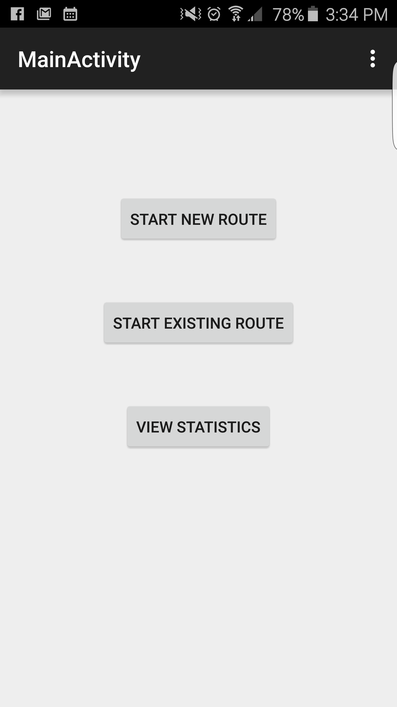
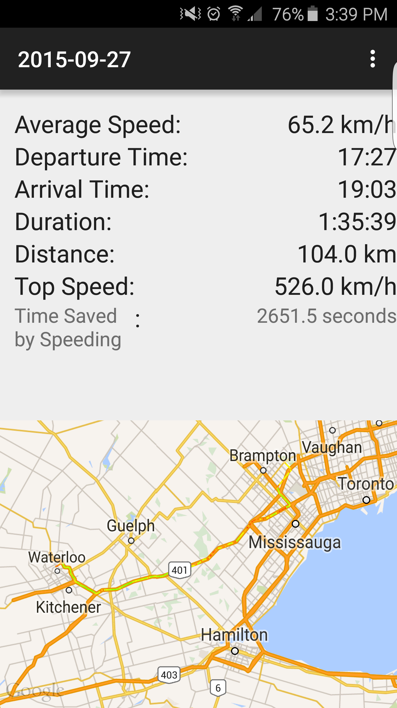

TrafficTime
A commute analysis Android Application that tracks statistics of your daily trips
This Android Application allows you to save your commute everyday, for viewing later. In addition, the app calculates various trip details including average speed, departure time, arrival time, duration, distance, and top speed.
Another feature is the "Time saved by speeding calculator" which allows you to input speed limit data for your commute, then calculates the amount of time you saved by speeding each trip.
View source code


IoT Security System
A home or business security system that works by tracking the state of door and window sensors to detect intruders
The Texas Instruments CC3200 Internet of Things (IoT) Microcontroller sends door and window events from microcontroller to an Android Application over a WiFi connection using UDP.
Audible prompts, spoken by the Android Application are used to allow the user to arm and disarm the system with the correct passcode. If an unauthorised person opens a door or window, the alarm will sound and an email will be sent to the specified email account.
View source code for Microcontroller
View source code for Android Application